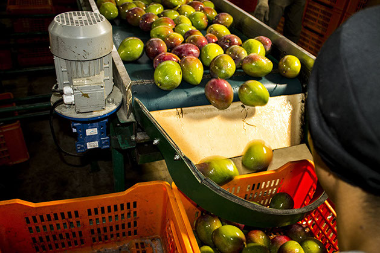
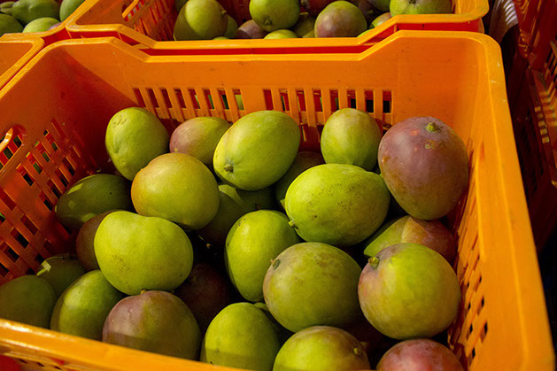

SEMBRIEXPORT S.A.
Empresa fundada el 13 de septiembre de 1991, orientada a exportar productos de calidad con empaque de excelente presentación e inocuidad.
SEMBRIEXPORT S.A. trabaja en la producción, procesamiento y exportación de mango con foco en calidad, inocuidad y mejora continua.

Empresa fundada el 13 de septiembre de 1991, orientada a exportar productos de calidad con empaque de excelente presentación e inocuidad.
La fruta se produce en diferentes haciendas con certificación Global Gap, cumpliendo normas exigidas por el mercado internacional.

El procesamiento se realiza en la empacadora Dining S.A., bajo normas fitosanitarias APHIS - USDA, Buenas Prácticas de Manufactura y certificación HACCP para garantizar inocuidad en cada fase.